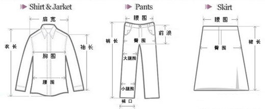

裁剪放码 | 服装裁剪的人体测量入门[图]
内容摘要：裁剪放码 | 服装裁剪的人体测量入门[图]这是各种服装裁剪当中具体的量衣方法，大家可以仔细记忆一下，以方便在裁剪衣服知识中用到。


这是各种服装裁剪当中具体的量衣方法，大家可以仔细记忆一下，以方便在裁剪衣服知识中用到。
服装裁剪的人体测量入门方法：
1.总体高：代表服装“号”，由头部顶点垂直量至脚根。
2.衣长：由前身左侧脖根处，通过胸部最高点，量对需长度，一般量至手的虎口。
3.胸围：代表上衣类服装“型”，在衬衫外，沿腋下，通过胸部最丰满处，平衡围量一周，按需要
加放尺寸。
4.肩宽：由后背左肩骨外端顶点量至右肩骨外端顶点(软尺在后背中央贴紧后脖根略成弧形)。款式
需要夸张时，肩可适当放宽。灯笼袖款可适当改窄。
5.袖长：由左肩骨外端顶点量至手的虎口，按需要增减长度。
6.袖口：围量手腕一周，再按需要加放尺。寸还可根据款式的不同用胸围比例法计算。
7.领大：沿喉骨下围量一周，按需要加放尺寸。
8.腰节：一般体型可按总体高算出。遇到特殊体型时，就需要量取前后的腰节尺寸(在腰部最细处，
围一条皮尺成水平)，分别量取前后腰节的尺寸。
9.裤长：由腰部左侧胯骨上端，向上4厘米往下量至脚跟减3厘米。
10.腰围：代表裤子类服装“型”。在单裤外沿腰间最细处围量一周，按需要加放尺寸。
11.臀围：沿臀部最丰满处平衡围量一周，按需要加放松度。
12.上裆：由腰部右侧胯骨上端，向上4厘米，量至大腿根。